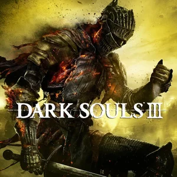
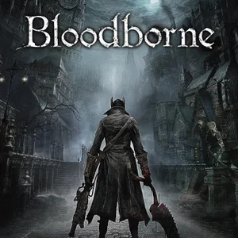
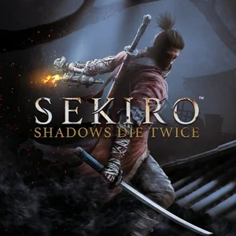

Elden Ring
Sobre:Um jogo de ação e RPG, que se passa em um vasto mundo aberto chamado The Lands Between. Os jogadores exploram um ambiente rico em lore, enfrentando inimigos desafiadores, chefes épicos e utilizando um sistema de combate profundo. Combinando elementos de fantasia sombria e liberdade de exploração.

Saga Dark-Souls
Sobre: Uma série de jogos de ação e RPG, composta por 3 títulos principais. Conhecida por sua dificuldade desafiadora, narrativa indireta e ambientação sombria em mundos devastados por maldições e decadência, os jogadores enfrentam inimigos brutais e chefes imponentes, explorando ambientes interconectados repletos de mistérios e segredos.
Bloodborne
Sobre: Jogo de ação e RPG desenvolvido pela FromSoftware e lançado exclusivamente para PlayStation 4. Ambientado na sombria e gótica cidade de Yharnam, infestada por uma misteriosa doença, o jogo combina exploração intensa, combates rápidos e uma atmosfera de terror com influência no horror cósmico de Lovecraft e na estética vitoriana.
Sekiro
Sobre:O jogo de ação e aventura, ambientado no Japão do período Sengoku, segue a jornada de Sekiro, um shinobi em busca de vingança, enfrentando inimigos mortais e desafios intensos. Conhecido por seu combate rápido e técnico, focado em postura e parry, Sekiro combina narrativa envolvente, ambientes detalhados e mecânicas inovadoras como a ressurreição.
